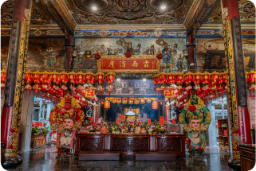
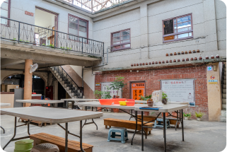
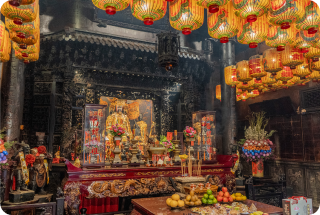
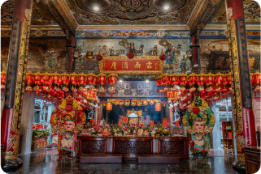
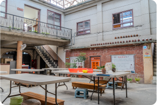
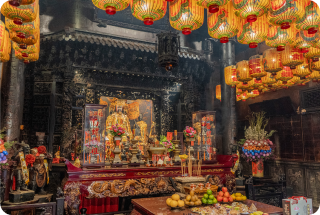

福興宮俗稱舊街媽祖廟。奉祀主神是天上聖母(媽祖)。創建於清雍正元年(西元1723年)。廟內留存許多的古物；天上聖母神像、十八羅漢像，雕工細膩，神情生動。兩根石柱和兩座石獅是同治年間所立，石材來自大陸的隴石，也是精工雕琢，乃珍貴的藝術品。廟內還有年代久遠的幾塊牌匾：「海國安瀾」、「好義從風」、「莫不尊親」等，增添廟宇尊榮。現在的廟堂，三樓式殿宇於10幾年增建過，近年來中部地區最隆重的廟宇活動－大甲媽祖出巡，由台中市大甲鎮瀾宮萬人徒步到嘉義縣新港鄉奉天宮活動，途中首要休息站即為西螺福興宮，故每年此時，鎮內湧進萬人信徒、藝陣，比農曆過年還熱鬧，成為西螺鎮內一大盛事。
知道更多
 




